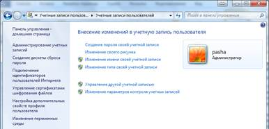
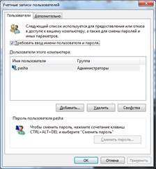
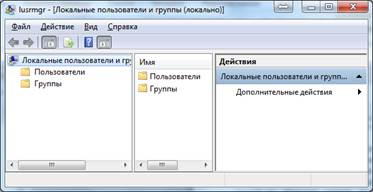
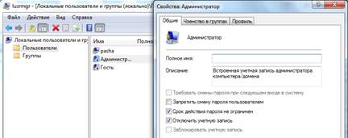
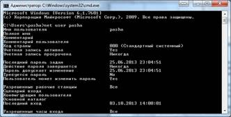
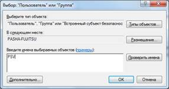
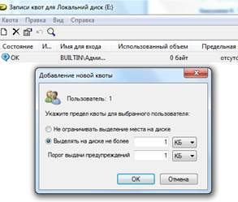

Вміння управляти локальними користувачами і групами будь-якої компʼютерної системи та спільний доступ до об’єктів файлової системи є запорукою надійного захисту операційної системи від несанкціонованого доступу.
Методичні вказівки
Облікові записи користувачів ‒ основний інструмент захисту даних, навіть якщо на своєму комп’ютері ви єдиний користувач. Система облікових записів дозволяє шифрувати файли так, щоб їх було неможливо прочитати без введення пароля або можна було відкривати інформацію тільки для довірених користувачів мережі.
Діалогових вікон для управління обліковими записами користувачів в Windows 7 цілих чотири. Всі вони по-різному виглядають і призначені для різних, так би мовити, «цільових аудиторій». Проблема в тому, що в кожному з цих вікон є певні параметри, недоступні в інших трьох, тому для вирішення всіх поставлених перед вами завдань доведеться користуватися всіма цими інструментами потроху.
Облікові записи користувачів (User Accounts)
Апплет «Облікові записи користувачів (User Accounts)» (рис. 1) відкривається з панелі управління.

Рис. 1. Вікно «User Accounts» Windows 7
Додавати, налаштовувати і видаляти облікові записи за допомогою цього вікна дуже легко.
Облікові записи користувачів 2 (User Accounts 2)
Кілька додаткових параметрів облікових записів користувачів, можна змінити тільки в альтернативному апплеті «Облікові записи користувачів (User Accounts)» ‒ це по суті, пережиток, що дістався нам у спадок від Windows 2000. Щоб відкрити дане діалогове вікно (рис. 2), відкрийте меню «Пуск» і в полі «Пошук (Search)» введіть:
% SystemRoot%\system32\control userpasswords2
Як і в основному вікні «Облікові записи користувачів (User Accounts)», тут можна додавати нових користувачів, перейменовувати і видаляти існуючі облікові записи. Проте в цьому вікні пропонується більше налаштувань, що стосуються дозволів і обмежень для облікових записів. Також тут відкривається доступ до облікових записів, які в звичайному вікні «Облікові записи користувачів (User Accounts)» приховані: Адміністратор і обліковий запис IUSR, який використовує веб-сервер IIS.

Рис. 2. Вікно «User Accounts 2» Windows 7
Локальні користувачі та групи (Local Users and Groups)
Третій спосіб управління обліковими записами користувачів в Windows 7 через редактор політик «Локальні користувачі та групи (Local Users and Groups) (LUaG)», вікно якого показано на рис.3. Відкрийте меню «Пуск», введіть lusrmgr.msc у полі пошуку та натисніть Enter. Також можна клацнути правою кнопкою миші в меню Пуск на «Мій комп’ютер (Computer)», вибрати Управління (Manage), а потім у деревовидному поданні знайти «Локальні користувачі та групи (Local Users and Groups)».

Рис. 3. Вікно «Local Users and Groups» Windows 7
У LUaG можна керувати групами, встановлювати термін дії паролів і змінювати домашні каталоги користувачів. Двічі клацніть на будь-який запис в категорії Користувачі (Users) або Групи (Groups), щоб відкрити відповідні параметри. Щоб додати нового користувача або групу, клікніть правою кнопкою миші на порожньому полі в правій панелі.
Група ‒ це набір облікових записів користувачів, що дозволяє посилатися на всіх них за допомогою одного імені. Групи зручно застосовувати для налаштування доступу до даних. Замість того щоб перераховувати всі імена користувачів, потрібно всього лише вказати ім’я однієї групи.
Диспетчер облікових даних (Credential Manager)
Вікно «Диспетчер облікових даних (Credential Manager)» відкривається з панелі управління. Тут можна переглядати, змінювати і, що саме важливе, додавати паролі до облікових записів на інших комп’ютерах. Хоча налаштувати облікові записи локального комп’ютера за допомогою цього інструмента не вийде, для доступу до спільних папок на інших комп’ютерах він незамінний.
Кожному користувачеві на комп’ютері присвоюється унікальний ідентифікатор безпеки (Security Identifier, SID). Він необхідний для застосування таких можливостей, як налаштування дозволів і шифрування, а також для реалізації деяких інших специфічних рішень. Наприклад, ваші персональні налаштування зберігаються в реєстрі у гілці з приблизно таким ім’ям:
HKEY_USERS \ S-1-5-21-1727987266-1036259444-725315541-500
Профілі користувачів
На ізольованому комп’ютері з Windows 7 локальні профілі користувачів створюються автоматично. Інформація локальних профілів необхідна для підтримки налаштувань робочого столу локального комп’ютера, характерних для конкретного користувача. Профіль створюється для кожного користувача в процесі його першої реєстрації в комп’ютері.
Профіль користувача має наступні перевагами: - при реєстрації користувача в системі робочий стіл одержує ті самі налаштування, які існували у момент попереднього виходу користувача з системи; - декілька користувачів можуть працювати на одному і тому ж комп’ютері в індивідуальних середовищах (не можна тільки мати власні параметри роздільної здатності екрану і частоти розгортки; тут потрібно застосовувати профілі обладнання); - при роботі комп’ютера в домені профілі користувачів можуть бути збережені на сервері.
В цьому випадку користувач дістає можливість працювати зі своїм профілем при реєстрації на будь-якому комп’ютері мережі. Такі профілі називаються переміщуваними (roaming profile). Різновидом переміщуваних профілів є обов’язкові профілі (mandatory profiles). Такий профіль користувач не може змінювати, і всі зміни, зроблені в налаштуваннях системи, втрачаються при виході з неї.
Дозволи та безпека
Встановлюючи дозволи для файлів і папок, ви обмежуєте доступ до них деяким користувачам, дозволяючи іншим зчитувати або модифікувати файли. Проблема в тому що якщо покладатися на типові налаштування Windows 7 то ваші файли зможе читати хто завгодно, а от змінити їх не зможе ніхто.
Зверніть увагу на те, що дозволи можна налаштовувати тільки для файлів і папок, що зберігаються в томах NTFS.
Встановлення дозволів для файлів і папок
У це складно повірити, але при розробці дозволів за умовчанням в Windows 7 програмісти Microsoft дійсно подумали про те, як зробити це правильно. У Windows ХР і попередніх версіях у будь-якої облікового запису за замовчуванням був доступ до всіх файлів на жорсткому диску. Для того щоб надати або обмежити комусь доступ до ваших файлів, потрібно налаштувати дозволи для цього користувача. Справа дещо запплутується, коли ви розумієте, що для будь-якого об’єкта (файлу, папки, принтера). Існує два різних вікна налаштування дозволів:
#### дозволи для об’єкта.
Клацніть на будь-якому файлі, папці, диску, ключі реєстру або принтері правою кнопкою миші, виберіть Властивості (Properties) і перейдіть на вкладку Безпека (Security), щоб переглянути або налаштувати дозволи для обраного об’єкта або декількох об’єктів. Від цих параметрів залежить доступ користувачів (включаючи вас) до даного об’єкта.
дозволи загального доступу.
Клацніть на будь-якій папці, диску або принтері, виберіть Властивості (Properties), перейдіть на вкладку Доступ (Sharing), клацніть Розширені налаштування (Advanced Sharing) і для перегляду або налаштування дозволів для вибраного об’єкта (або декількох об’єктів) натисніть Дозволи (Permissions).
Завдання до виконання роботи
Завдання 1. Створення дискети скидання пароля.
1. За допомогою апплету «Облікові записи користувачів» панелі управління створити для свого облікового запису дискету скидання пароля, яка дозволить коректно змінити пароль у випадку його втрати та увійти в систему. Для створення такої дискети вибрати пункт «Створення дискети скидання пароля» лівого меню і слідкувати інструкціям майстра. 2. Після створення такої дискети увійти у систему за допомогою цієї дискети.
Відобразіть у звіті 3-4 скріншоти з результатами виконання завдання.
Завдання 2. Робота з оснасткою «Local Users and Groups».
1. За допомогою оснастки Local Users and Groups увімкнути користувача «Адміністратор» (рис. 5). 2. Заборонити зміну пароля користувачем та задати пароль адміністратора: Passw0rd1.

Рис. 5. Увімкнення користувача «Адміністратор»
Відобразіть у звіті 3-4 скріншоти з результатами виконання завдання.
Завдання 3. Робота з апплетом «Облікові записи користувачів 2».
1. За допомогою апплету «Облікові записи користувачів 2» створити новий обліковий запис з правами користувача, якого назвати власними ініціалами, призначити йому початковий пароль та поставити вимогу зміни пароля при наступному вході в систему.
Відобразіть у звіті 3-4 скріншоти з результатами виконання завдання.
Завдання 4. Додавання користувачів в групи.
1. За допомогою оснастки «Локальні користувачі та групи» консолі mmc внести створеного користувача в групу «Оператори архіва». 2. Наступним кроком створити нову групу, одноіменну академічній групі, та внести в неї цього ж користувача. 3. Перезапустити систему та увійти під щойно створеним користувачем.
Відобразіть у звіті 3-4 скріншоти з результатами виконання завдання.
Завдання 5. Додавання користувачів в групи.
1. За допомогою оснастки «Локальні користувачі та групи» консолі mmc внести створеного користувача в групу «Оператори архіва». 2. Наступним кроком створити нову групу, одноіменну академічній групі, та внести в неї цього ж користувача. 3. Перезапустити систему та увійти під щойно створеним користувачем.
Відобразіть у звіті 3-4 скріншоти з результатами виконання завдання.
Завдання 6. Створення користувачів за допомогою командного рядка.
1. За допомогою утиліти командного рядка net user створити користувача (довідка по цій утиліті викликається за допомогою команди net help user або net user /?) з обмеженим терміном дії облікового запису (місяць). 2. За допомогою даної утиліти вивести відомості про одного з користувачів на екран (рис. 6).

Рис. 6. Вивід відомостей про обліковий запис за допомогою командного рядка
Завдання 7. Створення та виведення відомостей про групи за допомогою командного рядка.
За допомогою утиліти командного рядка net localgroup (довідка по цій утиліті викликається за допомогою команди net help localgroup або net localgroup /?), вивести відомості про групу створену в завданні 4 на екран.
Відобразіть у звіті 3-4 скріншоти з результатами виконання завдання.
Завдання 8. Додавання субʼєктів безпеки та задання для нього дозволів.
1. Створити на томі NTFS нову папку. 2. У властивостях об’єкту перейти на вкладку «Безпека». (Звернути увагу на те, які дозволи призначені за замовчуванням) Для того, щоб дозволити користувачам створювати файли і папки у цій папці, але заборонити її видаляти, а також для перегляду та редагування елементарних дозволів, натисніть кнопку «Додатково». Щоб додати елементарний дозвіл для користувача чи групи натисніть «Змінити розширення…» та «Додати» (рис. 7); додайте суб’єкта безпеки створеного у завданні 3 та задайте для нього дозволи (заборона видалення).

Рис. 7. Вкладка “Безпека” властивостей об’єкту файлової системи
Відобразіть у звіті 3-4 скріншоти з результатами виконання завдання.
Завдання 9. Увійти до системи за допомогою облікового запису користувача (створеного у завданні 3) та переконатися у неможливості видаляти цю папку, однак маючи змогу створювати в ній файли та підпапки.
Відобразіть у звіті 3-4 скріншоти з результатами виконання завдання та пояснити отримані результати.
Завдання 10. Задання квот для тому NTFS.
1. Під обліковим записом користувача з адміністративними правами перейти на вкладку «Квота» властивостей NTFS тому (за необхідності конвертувати існуючий FAT том, або створити новий). Включити управління квотами у «жорсткому» режимі. 2. У вікні «Записи квот» скориставшись меню «Квота» створити індивідуальний запис квоти для користувача створеного у завданні 3 (рис. 8). 3. Увійти до системи під обліковим записом даного користува. Спробувати записати на том з квотами файли сумарним обсягом більшим за розмір квоти. Переконатись у неможливості такої операції.

Рис. 8. Додавання нового запису квоти
Відобразіть у звіті 3-4 скріншоти з результатами виконання завдання та пояснити отримані результати.
Контрольні запитання:
1. Назвіть діалогові вікна для управління обліковими записами користувачів у ОС Windows 7 та їх особливості? 2. Що таке профілі користувачів? 3. Опишіть про створення користувачів та груп за допомогою командного рядка. 4. Що таке «SID»? 5. Розкажіть про встановлення дозволів для файлів і папок в ОС Windows 7?